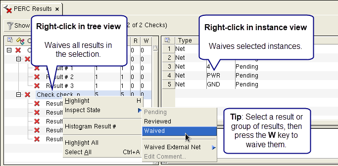

A topology waiver
description file suitable for use with the PERC Waiver Path rule
file statement can be generated using Calibre RVE.
The
topology waiver description file defines netlist results waivers.
The topology waiver description file is a text file and can be edited
manually if desired (see “Topology Waiver Description File Format”). You can specify a trigger
function that executes after the topology waiver description file
is created.
Prerequisites
Calibre
PERC has been run using the PERC Report Maximum ALL setting.
If you do not run with the
ALL setting, there is no way to guarantee you waive all results of
concern.
A Mask SVDB
Directory from the Calibre PERC run.
Familiarity
with using Calibre RVE to analyze Calibre PERC results. See “Using Calibre RVE for PERC” in the Calibre RVE User’s Manual.
(Optional)
To force the use of the waiver comment dialog box, set the environment variable
MGC_CALIBRE_RVE_ENFORCE_WAIVER_COMMENT to 1 before starting Calibre
RVE. See “Force Use of Waiver Comment Dialog Box” in the Calibre RVE User’s Manual.
Procedure
- Start Calibre RVE and open
the Mask SVDB Directory generated by Calibre PERC.
- (Optional) Specify waiver
options:
- Choose and
select the Waivers category.
- To specify
waiver comments, enable “Show comment dialog while reviewing (PERC
only) or waiving results.”
- To add
property criteria to the waived result, enable “Export PERC waivers
with property criteria from database.” Use this option to make waiving
of a result conditional on the property criteria.
For each property attached to a result, a ‑property
or ‑propertyString parameter is added with the setting {propertyName == value},
where value is
the corresponding property value in the results database. See “Topology Waiver Description File Format”.
When including property criteria, the Library and Delta export
options are not available in the Export PERC Waiver Description
File dialog box.
- (Optional) To specify a trigger
function that runs after the topology waiver file is created, do
the following:
- Choose the Databases category
on the Options tab.
- Enable “Export Waivers” and
enter the trigger function call in the text field. The filename
of the waiver file is appended to the list of parameters passed
to the trigger function at execution time.
- Click Apply.
- (Optional) In the PERC Results
tab, click the Group By button (
 ) to
select a grouping hierarchy for the Tree View. See “Grouping Results in Calibre RVE for PERC” in the Calibre RVE
User’s Manual for more information.
) to
select a grouping hierarchy for the Tree View. See “Grouping Results in Calibre RVE for PERC” in the Calibre RVE
User’s Manual for more information.
- Expand the hierarchy in the
tree view until you find the results you want to waive.
- Waive results with one of
the following methods:
Waive in tree view
To waive all results in a cell,
rule, or other grouping in the tree view, right-click the grouping
in the tree view and select ,
or press the W key.
Waive in instance view
table
To waive a particular result
in the right-hand table in the PERC Results tab, right-click the
result and select , or
press the W key. If
a rule produced multiple instances of a result, you can use this
method to waive a particular placement/instance. See “Viewing Separate Placements of a Result in the PERC Results Tab”
in the Calibre RVE User’s Manual for more information.
Use Shift- and Ctrl-click to
select multiple items.
Figure 1 shows the right-click menus for waiving
results. Waived results in the tree view are indicated with a dim
red X and a positive integer in the W column.
Waived results in the instance table are indicated by the word “Waived”
in the Inspect State column.
Figure 1. Waiving Calibre PERC
Results
- (Optional)
If you have a result of type “Net” and you want to control whether
that result is waived based upon the net’s external connection to
the waiver cell, then use the Inspect State > Waived
External Net option. Selecting Yes waives
the result even if the net has an external connection to the waiver
cell (that is, the result net is connected to a port having an external
connection). No does not and is the default.
This setting is stored in the topology waiver description file and
is persistent in the Mask SVDB Directory.
- (Optional)
if you want to export a subset of the waived results, select the
results to export with one of the following methods:
Apply
a result filter as described in “Result Filters in Calibre RVE for PERC” in the Calibre RVE User’s Manual.
Select the
results to waive using Shift- and Ctrl-click. You can select results
in the tree and/or detailed view.
- Select to
create a topology waiver description file based on the waived results.
Specify the following information in the Export PERC Waiver Description
File dialog box:
Waiver
Description File Name
The pathname for the topology
waiver description file. You can use environment variables in the
pathname.
PERC
Waiver Flow Type — Select the flow type from the following
selections:
Full-chip — As indicated.
Library — Use this option if
you are creating waivers for a small block or IP cell. This option
adds the “‑parent cell”
parameter to the waiver description, where cell is
the top cell for the currently loaded results database.
Waiver Export Type
Waivers to Export
Use this option to export the subset of waived results selected
in Step 8.
All — Export all waived
results.
Displayed — Export
only the waived results in the Calibre RVE display. If you applied
a filter, only waived results that satisfy the filter are exported.
Selected — Export only
the waived results selected with Shift- and Ctrl-click.
The Displayed and Selected options are not available when the
Delta export option is selected.
- Click OK to
create the topology waiver description file and close the dialog
box.
Results
The output is a topology waiver description
file. The export algorithm typically generates one waiver statement
per hierarchical result, but the algorithm will generate more statements
if the placements are individually waived with different comments.
The following is a description of an exported topology waiver for
a hierarchical result using the Topology Waiver Description File Format as a reference:
If the LIBRARY option is selected
and the waiver cell is not the top cell, then the ‑parent argument
is added with the parent cell set to the top cell of the design.
If the result does not occur
in every instance of the waiver cell in the entire design, or if not
all placements are waived, then the -path argument is added with
the path list containing the waived placements.
If the same rule name is used
for more than one rule check in the rule file, then the ‑tvfFunction,
-init, and -xform arguments are added as needed.
If the “Export
PERC waivers with property criteria from database” option is enabled
in the Waivers category of the Calibre RVE Options tab,
the ‑property or ‑propertyString parameter is added to each waived
result.
The optional argument ‑comment
is added if a waiver comment exists; the arguments ‑user and ‑date
are added by default. Calibre RVE prompts for a waiver comment if “Show
comment dialog while reviewing (PERC only) or waiving results” is
enabled in the Waivers category on the Options tab.
If you enabled “Export Waivers” in
the Databases category on the Options tab,
the specified trigger function is executed after the topology waiver
file is created.
Waivers are applied automatically
during a Calibre PERC run by using the PERC Waiver Path specification statement in the rule file with the name
of the exported topology waiver description file as an argument.